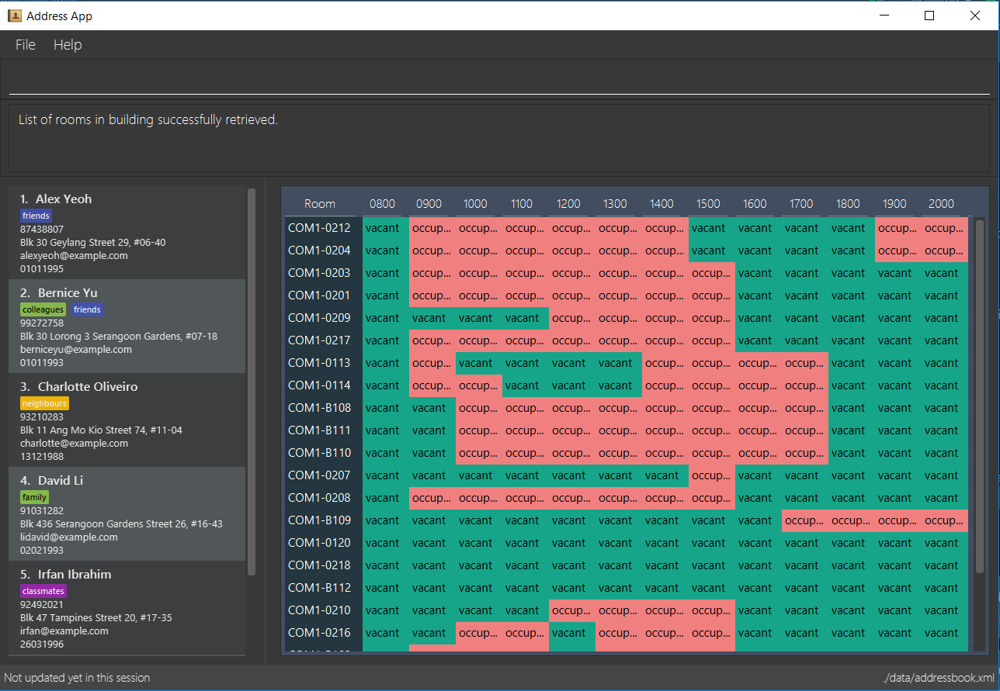

By: Team W11-B4 Since: Feb 2018 Licence: MIT
- 1. Introduction
- 2. Quick Start
- 3. Features
- 3.1. Viewing help :
help - 3.2. Adding a person:
add - 3.3. Adding a command alias:
alias(since v1.1) - 3.4. Removing a currently existing alias:
unalias(since v1.3) - 3.5. Listing all persons :
list - 3.6. Editing a person :
edit - 3.7. Locating persons by name:
find - 3.8. Viewing timetable of a person:
timetable(since in v1.4) - 3.9. Removal of password:
nopassword(since v1.3) - 3.10. Viewing a collated birthday list:
birthdays(since v1.3) - 3.11. Viewing common time slots in timetable:
free(coming in v2.0) - 3.12. Deleting a person :
delete - 3.13. Selecting a person :
select - 3.14. Importing data :
import(since v1.1) - 3.15. Exporting data :
export(since v1.4) - 3.16. Vacant study rooms finder :
vacant(since v1.3) - 3.17. Google maps display :
map(coming in v1.4) - 3.18. Listing entered commands :
history - 3.19. Undoing previous command :
undo - 3.20. Redoing the previously undone command :
redo - 3.21. Clearing all entries :
clear - 3.22. Exiting the program :
exit - 3.23. Saving the data
- 3.24. Encrypting data files :
password(since v1.2)
- 3.1. Viewing help :
- 4. FAQ
- 5. Command Summary
1. Introduction
-
Stardy Together (ST) is for NUS Students who prefer to use a desktop app for managing NUS friends' contacts.
-
More importantly, ST is optimized for those who prefer to work with a Command Line Interface (CLI) while still having the benefits of a Graphical User Interface (GUI).
-
If you can type fast, ST can get your contact management tasks done faster than traditional GUI apps.
-
This guide provides a list of features that are available on ST and their usage.
-
Interested? Jump to the next section, Section 2, “Quick Start”, to get started. Enjoy!
2. Quick Start
-
Ensure you have Java version
1.8.0_60or later installed in your Computer.Having any Java 8 version is not enough.
This app will not work with earlier versions of Java 8. -
Download the latest
StardyTogether.jarhere. -
Copy the file to the folder you want to use as the home folder for your StardyTogether.
-
Double-click the file to start the app. The GUI should appear in a few seconds.
 -
Type the command in the command box and press Enter to execute it.
e.g. typinghelpand pressing Enter will open the help window. -
Some example commands you can try:
-
list: lists all contacts -
addn/John Doe p/98765432 e/johnd@example.com a/John street, block 123, #01-01 b/010195: adds a contact namedJohn Doeto StardyTogether. -
delete3: deletes the 3rd contact shown in the current list -
exit: exits the app
-
-
Refer to the next section, Section 3, “Features”, for details of each command, or refer to Section 5, “Command Summary” for the summary of all the commands.
3. Features
Command Format
-
Words in
UPPER_CASEare the parameters to be supplied by the user e.g. inadd n/NAME,NAMEis a parameter which can be used asadd n/John Doe. -
Items in square brackets are optional e.g
n/NAME [t/TAG]can be used asn/John Doe t/friendor asn/John Doe. -
Items with
… after them can be used multiple times including zero times e.g.[t/TAG]…can be used ast/friend,t/friend t/familyetc. -
Parameters can be in any order e.g. if the command specifies
n/NAME p/PHONE_NUMBER,p/PHONE_NUMBER n/NAMEis also acceptable.
3.1. Viewing help : help
Format: help
3.2. Adding a person: add
Adds a person to StardyTogether.
Format: add n/NAME p/PHONE_NUMBER e/EMAIL a/ADDRESS b/BIRTHDAY tt/TIMETABLE [t/TAG]…
| A person can have any number of tags (including 0) |
|
Examples:
-
add n/John Doe p/98765432 e/johnd@example.com a/John street, block 123, #01-01 b/010195 tt/http://modsn.us/oNZLY -
add n/Betsy Crowe t/friend e/betsycrowe@example.com a/Newgate Prison p/1234567 b/121212 tt/http://modsn.us/ojGeu t/criminal
3.3. Adding a command alias: alias (since v1.1)
Creates customized aliases for any valid command.
Format: alias [COMMAND] [ALIAS]
Examples:
-
alias history hist -
alias find f -
alias alias al
3.4. Removing a currently existing alias: unalias (since v1.3)
Removes a previously created alias.
Format: unalias [CURRENT_ALIAS]
Examples:
-
unalias hist
3.5. Listing all persons : list
Shows a list of all persons in StardyTogether.
Format: list
3.6. Editing a person : edit
Edits an existing person in StardyTogether.
Format: edit INDEX [n/NAME] [p/PHONE] [e/EMAIL] [a/ADDRESS] [b/BIRTHDAY] [t/TAG]…
Examples:
-
edit 1 p/91234567 e/johndoe@example.com
Edits the phone number and email address of the 1st person to be91234567andjohndoe@example.comrespectively. -
edit 2 n/Betsy Crower t/
Edits the name of the 2nd person to beBetsy Crowerand clears all existing tags.
3.7. Locating persons by name: find
Finds persons whose names contain any of the given keywords.
Format: find KEYWORD [MORE_KEYWORDS]
Examples:
-
find John
ReturnsjohnandJohn Doe -
find Betsy Tim John
Returns any person having namesBetsy,Tim, orJohn
3.8. Viewing timetable of a person: timetable (since in v1.4)
Displays the timetable of a person for Odd or Even Week.
Format: timetable INDEX ODD/EVEN
Examples:
-
timetable 1 odd
Displays combined timetable of the 1st person.
3.9. Removal of password: nopassword (since v1.3)
Removes the password of the application.
Format: nopassword
3.10. Viewing a collated birthday list: birthdays (since v1.3)
Displays a list that contains all the birthdays of all contacts ordered by date
Or display a notification of the birthdays today
Format: birthdays [ADDITIONAL_PARAMETER]
Examples:
-
birthdays
Displays a list of all birthdays -
birthdays today
Displays a window with the birthdays today
3.11. Viewing common time slots in timetable: free (coming in v2.0)
Displays the common free time of two people in StardyTogether.
Format: free p/[PERSON1] p/[PERSON2]
Examples:
-
free p/John Doe p/Han Tan
Displays the combined timetable for John Doe and Han Tan.
3.12. Deleting a person : delete
Deletes the specified person from StardyTogether.
Format: delete INDEX
Examples:
-
list
delete 2
Deletes the 2nd person in StardyTogether. -
find Betsy
delete 1
Deletes the 1st person in the results of thefindcommand.
3.13. Selecting a person : select
Selects the person identified by the index number used in the last person listing.
Format: select INDEX
Examples:
-
list
select 2
Selects the 2nd person in StardyTogether. -
find Betsy
select 1
Selects the 1st person in the results of thefindcommand.
3.14. Importing data : import (since v1.1)
Imports an encrypted or unencrypted StardyTogether instance from filepath to the existing StardyTogether application. Persons, Tags, and Aliases that are not in your StardyTogether will be added.
Format: import FILEPATH PASSWORD
Example:
-
import data/addressBook.xml testpassword
ImportsaddressBook.xmlfile at data folder using "testpassword" as the password.
3.15. Exporting data : export (since v1.4)
Exports the current view of the existing StardyTogether application with or without password encryption to the specified filepath
Format: export FILEPATH PASSWORD
Example:
-
export data/addressBook.xml testpassword
Exports the current list of StardyTogether application to theaddressBook.xmlfile at data folder using "testpassword" as the password for encryption.
3.16. Vacant study rooms finder : vacant (since v1.3)
Displays a list of rooms in the specified building and whether each room is vacant or not, in blocks of 1 hours.
Format: vacant BUILDING
Examples:
-
vacant COM1
Finds the vacancy status of study rooms in COM1 building.
3.17. Google maps display : map (coming in v1.4)
Launches Google Maps with the specified location(s).
Format: map LOCATION or map LOCATION/LOCATION…
Examples:
-
map BIZ1
Displays the location of BIZ1 (which is an NUS building name). -
map Tampines Mall/COM1
Displays the directions fromTampines MalltoCOM1. -
map Tampines Mall/COM1/Airport Blvd
Displays the directions fromTampines MalltoCOM1toAirport Blvd.
3.18. Listing entered commands : history
Lists all the commands that you have entered in reverse chronological order.
Format: history
|
Pressing the ↑ and ↓ arrows will display the previous and next input respectively in the command box. |
3.19. Undoing previous command : undo
Restores the StardyTogether instance to the state before the previous undoable command was executed.
Format: undo
|
Undoable commands: those commands that modify the StardyTogether’s content ( |
Examples:
-
delete 1
list
undo(reverses thedelete 1command) -
select 1
list
undo
Theundocommand fails as there are no undoable commands executed previously. -
delete 1
clear
undo(reverses theclearcommand)
undo(reverses thedelete 1command)
3.20. Redoing the previously undone command : redo
Reverses the most recent undo command.
Format: redo
Examples:
-
delete 1
undo(reverses thedelete 1command)
redo(reapplies thedelete 1command) -
delete 1
redo
Theredocommand fails as there are noundocommands executed previously. -
delete 1
clear
undo(reverses theclearcommand)
undo(reverses thedelete 1command)
redo(reapplies thedelete 1command)
redo(reapplies theclearcommand)
3.21. Clearing all entries : clear
Clears all entries from StardyTogether.
Format: clear
3.22. Exiting the program : exit
Exits the program.
Format: exit
3.23. Saving the data
StardyTogether data are saved in the hard disk automatically after any command that changes the data.
There is no need to save manually.
3.24. Encrypting data files : password (since v1.2)
Changes the password used to encrypt the StardyTogether.
Format: password PASSWORD
Examples:
-
password test
Encryptsaddressbook.xmlwith "test" as the key.
4. FAQ
Q: How do I transfer my data to another Computer?
A:
Method 1
Replaces the other computer’s data completely
Method 2 Merges the contacts of both computers
5. Command Summary
-
Add
add n/NAME p/PHONE_NUMBER e/EMAIL a/ADDRESS b/BIRTHDAY [t/TAG]…
e.g.add n/James Ho p/22224444 e/jamesho@example.com a/123, Clementi Rd, 1234665 b/010195 t/friend t/colleague -
Alias
alias [COMMAND] [ALIAS]
e.g.alias history hist -
Birthday List:
birthdays -
Clear :
clear -
Delete :
delete INDEX
e.g.delete 3 -
Edit :
edit INDEX [n/NAME] [p/PHONE_NUMBER] [e/EMAIL] [a/ADDRESS] [b/BIRTHDAY] [t/TAG]…
e.g.edit 2 n/James Lee e/jameslee@example.com -
Find :
find KEYWORD [MORE_KEYWORDS]
e.g.find James Jake -
Help :
help -
History :
history -
Import :
import FILEPATH PASSWORD
e.g.import data/addressBook.xml testpassword -
Export :
Export FILEPATH PASSWORD
e.g.export data/addressBook.xml testpassword -
List :
list -
Map :
map LOCATION
e.g.map S16 -
Password :
password PASSWORD
e.g.password test -
Remove Password :
nopassword -
Redo :
redo -
Select :
select INDEX
e.g.select 2 -
Unalias
unalias CURRENT_ALIAS
e.g.unalias hist -
Undo :
undo -
Vacant :
vacant BUILDING
e.g.vacant COM1